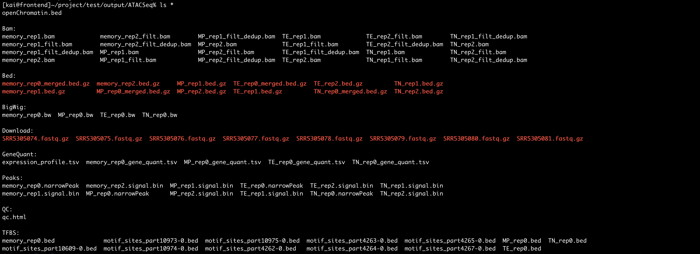
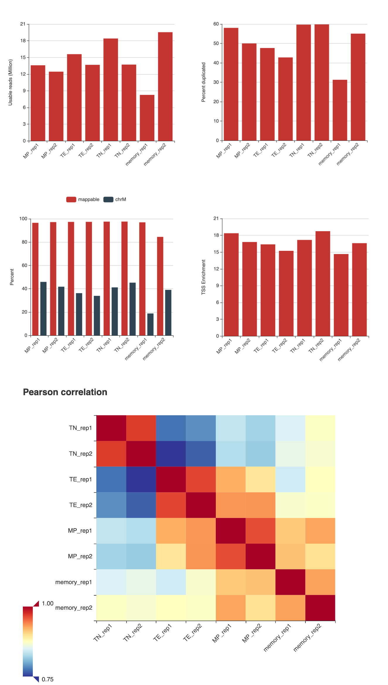
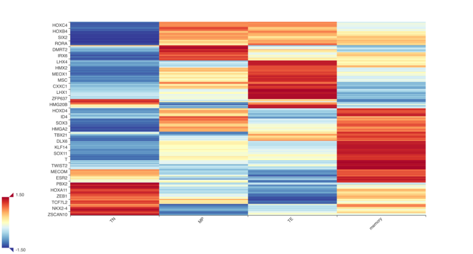
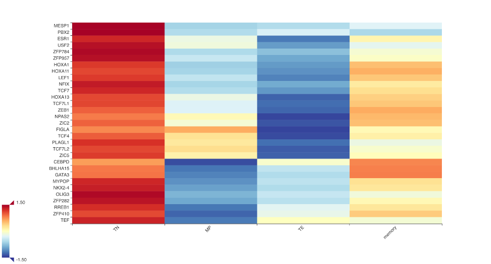

In this tutorial, we will re-analyze the ATAC-seq data published in Yu, 2017.
The analysis requires following additional software:
- fastq-dump
- samtools
- MACS2
- bwa
- bedGraphToBigWig
All you need to do in this tutorial is preparing two files (input.tsv and config.yml) and typing a single command. Taiji will do the rest for you.
If you are wondering what Taiji does under the hood, type taiji view taiji.html to generate an overview of the pipeline. You can then use your favorite web browser to open the HTML file.
Now let’s start the tutorial!
Preparing input
We will use the SRA ID as the input and Taiji will download the data for us. To do this, add the following lines to the “input.tsv” file:
type id group rep path format
ATAC-seq TN TN 1 SRR5305074 SRA
ATAC-seq TN TN 2 SRR5305075 SRA
ATAC-seq TE TE 1 SRR5305076 SRA
ATAC-seq TE TE 2 SRR5305077 SRA
ATAC-seq MP MP 1 SRR5305078 SRA
ATAC-seq MP MP 2 SRR5305079 SRA
ATAC-seq memory memory 1 SRR5305080 SRA
ATAC-seq memory memory 2 SRR5305081 SRAPlease note that the columns are TAB-separated. If there are multiple runs, combine them using “+”. For paired-end sequencing, specify that using the “PairedEnd” tag.
type id group rep path format tags
ATAC-seq memory memory 1 SXXXX80+SXXXX81 SRA
ATAC-seq memory memory 1 SXXXX80 SRA PairedEndTaiji also supports ENCODE data. You can input the file ID for any fastq or bam files and associate them with the “ENCODE” tag. For pairend-end fastqs, separate them using “,”.
type id group rep path tags
ATAC-seq control control 1 ENCFF893KQZ,ENCFF443HVZ ENCODEPreparing configuration file
This is how the configuration file looks like:
input: "input.tsv"
output_dir: "output/"
assembly: "mm10"Running the ATAC-seq analysis
Use the following command to run the pipeline using ten concurrent threads:
taiji run --config config.yml -n 10 +RTS -N10The arguments -n 10 +RTS -N10 tell the taiji to use 10 cores/threads.
OR
taiji run --config config.yml -n 10 --cloudif you are using a job scheduling system like slurm or PBS. (Click here to learn more about distributed computing)
Taiji is able to pick up where you left off! To demonstrate this, after finishing a few steps, press CTRL+C to STOP the program and then re-run the program using the exact same command. You shall see the program continues from the last checkpoint.
Results
It will take several hours for the program to finish. Once it finishes, all results will be in the output directory, including BAM files, BED files, peaks, etc.

Usually the first thing we want to look at is the quality of the data. The QC metrics can be visualized by the qc.html file in the output/ATACSeq/QC directory.
Here are some of the QC metrics:

Taiji combines motif scanning, network inference and the PageRank algorithm to rank TFs. This result will be saved in the GeneRank.tsv file. There is also a GeneRank.html file that you can visualize.

The figure above shows different T cell population has its own unique transcriptional profile. We can zoom in to see the list of TFs that show high ranking scores in naive CD8 T cells.

TCF7 is an important gene for the naive population. As an example, we plotted the gene TCF7 and its regulatees in TN and TE populations. It clearly shows that TCF7 regulates much more genes in the naive population.